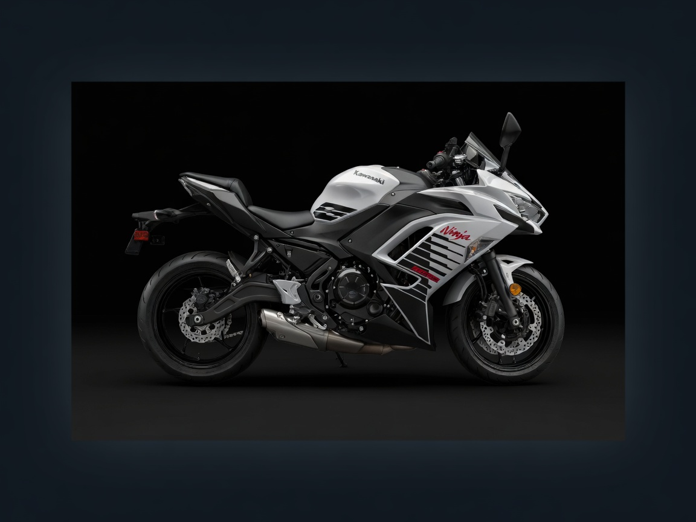

381 miles. One long beautiful push down the valley and over the Grapevine. Depart 7:15 AM. Optimized for quick, safe rest-stop decisions — tap to load the exact next leg in Google Maps before you roll.
Dark overview map below. The embedded Google Maps panel and every button pre-loads your exact next leg or the full route in the real Google Maps app with turn-by-turn + voice. Perfect when you pull over: tap once, phone talks you to the next stop.
Made for when you swing a leg off at 8:45AM in Coalinga or 12:05 in Castaic. Big targets. One-thumb operation. Preloaded next-leg navigation. Log your actuals if you want a souvenir of the day.
Optimized for quick glances when you pull over:
• Every gas stop has specific major brands listed for fast in/out.
• Lunch is a real sit-down with 60 min buffer — use it to cool down, hydrate, stretch properly.
• The Grapevine descent after Castaic is the final mental push: watch crosswinds, stay loose on bars.
• All deep-link navigation buttons are preloaded with the exact next destination so you tap once and roll.

Exact plan with 7:15 AM wheels-up. All navigation links preload the precise next destination so when you’re standing at the pump or wiping sauce off your hands you just tap and the phone knows where you’re going next.
Cool dawn air. Empty roads. US-101 S to CA-152 E onto I-5. This first 90 min is the best riding you’ll have all day — enjoy it.
Shell / Chevron / ARCO right at the interchange. Stretch hard, water up, quick smoke if you need it, fuel up. Still cool — make this fast and clean.
Use the Companion tools above. 10 min max here. Top off. Next is the long hot run to Bakersfield.
Classic diner booths — perfect for spreading gear. Order whatever looks good and hydrate like crazy. Hottest leg of the day comes after this. Fuel on the way back to the highway (CA-99 S → I-5 S).
Big full-amenity Pilot truck stop. Last real stop before the Grapevine descent and the final push through Santa Clarita into OC. Stretch, water, fuel. Check the bike. Winds pick up on the downhill — stay loose.
I-5 S through Santa Clarita, the 5 freeway through Orange County, straight home. You earned the beer. Put the bike away, hug the family, and enjoy the reset.
Spaced for a ~170 mi real-world tank. The valley gets brutal after 9:30. Hydrate at every stop like it’s your second job. The Grapevine descent after Castaic is the final test — watch the crosswinds.
Top off at or before 150. Never push the 170 on this bike in heat + wind + hills. Coalinga (123), Bakersfield (98 more), Castaic (73) all safe.
After Bakersfield it’s 90°F+. Mesh gear, hydration pack or bottles in tank bag, drink at every stop. The 60 min lunch is your big cooling window.
After Castaic the descent can get gusty (20+ mph). Keep a loose grip, stay in your lane, don’t fight the bike. It’ll be fine if you’re relaxed.
Every amber button on this page is a deep link into Google Maps with the exact next address/waypoint. Opens full app with voice. Best driving companion you can have at a truck stop.
Use the Companion panel. Start the timer. Check the boxes. 10 min gas stops are fast in-and-out. Don’t lollygag when it’s already 90°.
Present moment. Wind. Road. This is the antidote to 105-hour weeks. When the body says pull over, pull over. You have buffers built in.